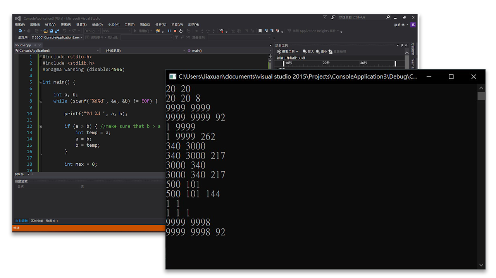

程式除錯很麻煩嗎?
學習並專精一款程式語言，寫題目可說是非常重要的一環，UVa 提供大量且類型多樣的題目，包括數字與文字處理、資料結構、演算法等不同面向，同時這些題目也成為許多資訊相關科係常見的程設作業。然而，若程式編寫出現錯誤，有時會很難找出原因，配合 uDebug 平台的測資比對功能可以快速發現錯誤的來源。
這個軟體可以給我們什麼?
撰寫好程式後，利用 uDebug 平台的測資在小黑窗中進行測試，但輸入與輸出卻混合在一起，難以複製到平台上比對，現在只要透過此軟體即可實現快速複製輸出的功能。